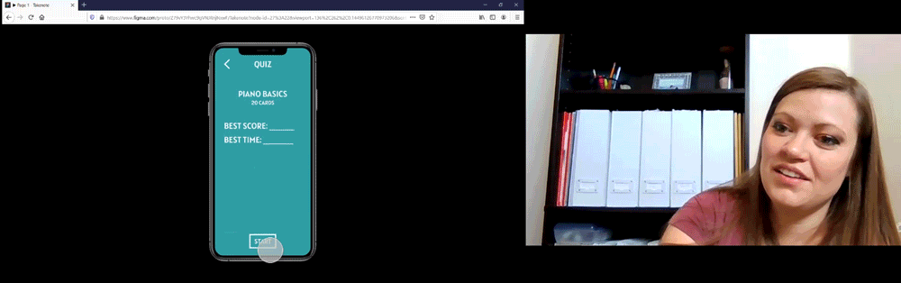

Spec Project 2021
Discovery
Competitive Analysis
I downloaded a few flashcard apps and tested them out to get a feel for what was currently available in the app store and opportunities to add unique value to the space.
Liked
- Buttons to flip whole deck while studying allow for memorizing both directions
- A library of pre-made decks saves the user a lot of time
- The ability to quiz yourself helps you see how well you know the information
Didn't Like
- Buttons that are too small are really hard to tap
- Counterintuitive user flows make for a steep learning curve and user dissatification
- A Lack of onboarding or tips force the user to figure things out on their own
Opportunity
- Create a more streamlined and intuitive navigation to avoid confusion
- Include a quiz history so the user can see their progress over time
- Create quiz specifically for frequently missed cards so users can accelerate learning
Audience
I decided to target young adults trying to learn music for the first time. I wanted to provide a learning experience that was extremely convenient and didn’t feel juvenile. To help me empathize with the target user, I created a user persona and put myself in their shoes.
Concepting
User Flows
I created user flows for primary tasks that would be completed in the app to help me understand what pages and navigation I would need to accomodate my app idea.
Wireframe 1
Started with the main pages and navigation without worried too much about other interactions.
Wireframe 2
Firmed up the main pages of the app and dove a little deeper on specifics of each page.
Wireframe 3
Highest fidelity wireframe with interstitial pages included and some copy.
Prototype
Finally, I created a prototype of the app in Figma so I could test the navigation, usability, and general pain points with potential users.
User Testing
Creating a Script
To prepare for user testing, I create a script to use. This helped me consistently set expectations, explain the purpose of the app, and outline the main tasks I wanted to observe the user doing.
Finding User Testers
I then reached out to friends and aquaintances, especially those with a music background who could give me speak to the usefulness of the app. Some of the user testers included a voice coach, a piano teacher, and a highschool band director.
"Taking Note"
During user testing sessions I tried not to prompt the tester other than to give them a task to complete and answer basic questions. I also asked them to speak out loud as much as possible while navigating the prototype. This helped me understand the user and the pain points they experienced much better than I could have just observing.

User Testing Results
Accelerated Learning
User testing allowed me to quickly make improvements to the design and illiminate points of confusion that I wasn’t aware of. Some of the improvements testers helped identify were things like better button labels, rearranging elements for better flow, and adding more personality to spark joy in the user.
Insights
More than one user tester expressed interest in using the app to help their students learn music notes and vocabulary outside of their lessons. This caused me to rethink the audience I was taregeting. Younger music students may be a better market fit than adult independent learners.
User testers repeatidly referenced Duolingo as a learning app that they enjoyed using. They suggested that turning the learning into more of a game would increase engagement and help fullfill the goal of helping users learn music.
User Sentiment
The consensus of the user testers was that they would find value in the app and were interested in seeing further iterations. One tester expressed, “I’m very impressed! This is definitely an app that I would download and use to better my understanding of music.”
UI and Brand Redesign
Logo
I created a minimal and clear logo by abstracting the music note into an oval around “note”
Design System
In order to create reliable and consistent designs, I built a design system consisting of the basic components, type face, and colors used throught the app. This makes both designing and handing off to a developer a lot easier.
Final Design
A selection of final reference frames

Outcome
Design Process
Through this spec project I came to understand and appreciate the design process. It became especially clear to me that user testing was the key to unlocking important insights. And that research done upfront is essential to producing a product that will add value
Confidence Boost
Designing an entire app from scratch seemed almost impossible, but by taking it one step at a time and getting plenty of feedback and support from others, I was able to not just finish, but feel proud of the work I accomplished.
Future Work
To continue work on this app I would do another round of user testing on the most recent prototype to check for any additional usability issues that may have been introduced during the UI update. After that I would doing additional research on how to best market the app and find a developer to bring the design to life.